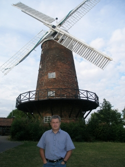
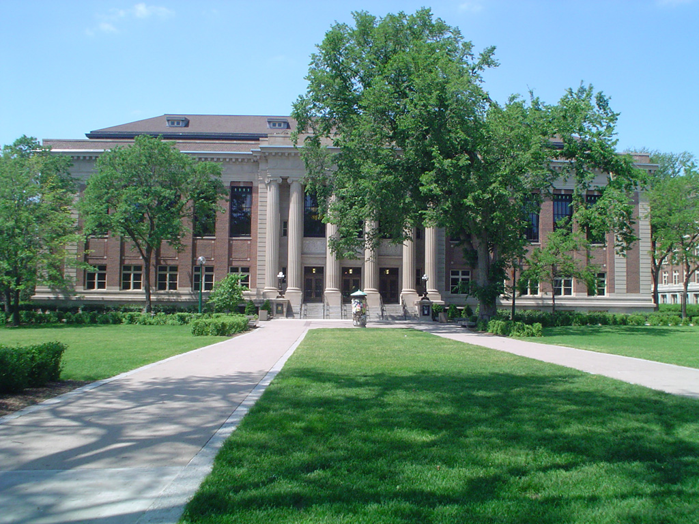
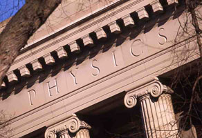

|
Professor of Physics
|
 Jorge at George's Mill in Sneinton |
University Address
School of Physics and Astronomy (map) (campus webcam)
University of Minnesota
116 Church St. S.E.
Minneapolis, MN 55455
(612) 624-9074
(612) 624-4578 (FAX)
vinals@umn.edu
Projects and Collaborators
- Topology Driven Flows in Chromonic Liquid Crystals. With Cody Schimming (U. of Minnesota), and Lucas Muyers (U. of Minnesota).
- A Materials Science Gateway for X-ray imaging and modeling of microstructures. With Matt Miller and Kelly Nygren (Cornell High Energy Syncrhrotron Source), Mark Miller and Mark Zhuang (San Diego Supercomputing Center), Bob Suter (Carnegie Mellon University), and Jim Johnson (University of Minnesota).
- Collaboration on Flow Across Scales. With Luiza Angheluta (U. Oslo).
|   |